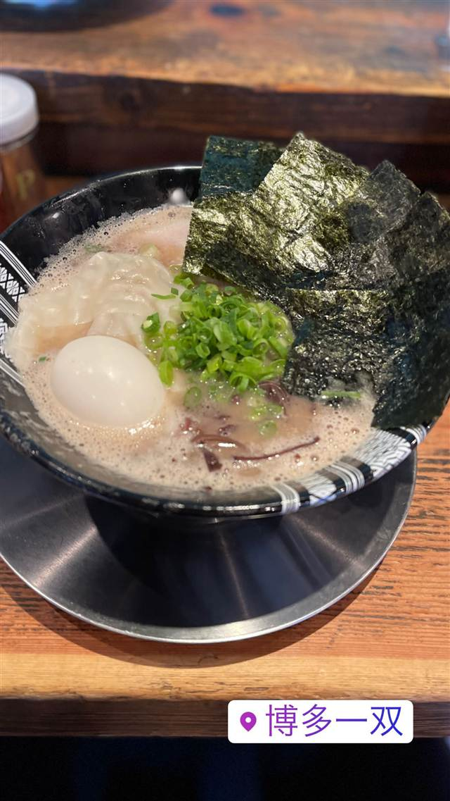
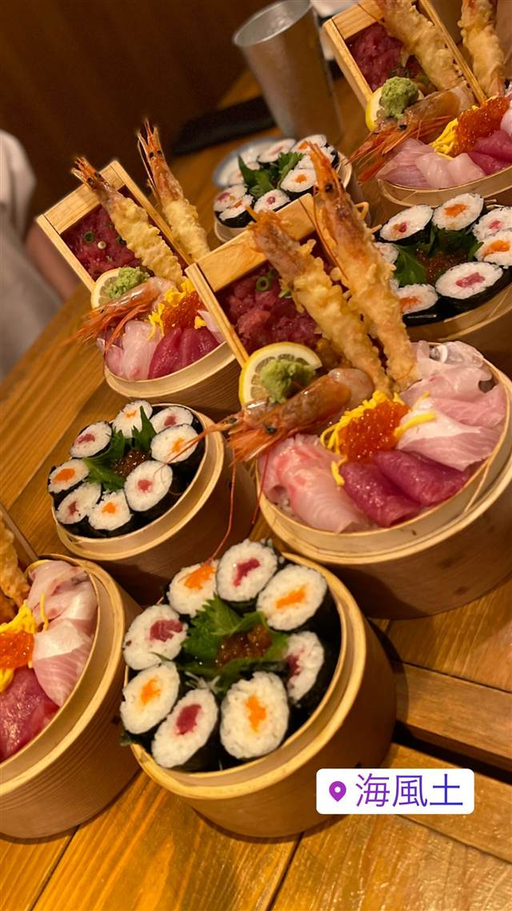

博多もつ鍋 前田屋 総本店
寿司職人だった料理長が仕立てるあっさり上品なもつ鍋
博多もつ鍋 前田屋 総本店
博多もつ鍋 前田屋は2012年に大名で創業し、2018年に博多駅そばへ総本店を構えた人気店。寿司屋で17年修行した総料理長が、厳選した国産和牛もつと契約農家直送の野菜であっさり上品なもつ鍋を仕立て、テレビでも紹介されている。
TRIVIA
豆知識
- 総料理長はもともと寿司職人として17年修行した経歴を持つ
- 活きイカは毎日唐津・呼子から直送されている
- 店内デザインは著名デザイナーが手がけている
REVIEWS
世間の評判
3.63食べログ
みそ味もつ鍋の人気と行列
- 3種類のスープの中でもみそ味のもつ鍋がおすすめという声が多い
- ごまさばや酢もつなど一品料理も美味しいと評価する声が多く見られる
- 昼の時間帯は行列ができるほど混雑するため予約が必須という声が多い
食べログ・ホットペッパー 口コミ1366件
| 創業 | 前田屋は2012年に大名で創業。総本店は2018年10月11日にオープン |
|---|---|
| 看板 | 国産和牛もつを使ったもつ鍋、唐津・呼子直送のイカの活き造り |
| こだわり | もつ本来の甘み・旨みを活かすためスープはあっさり上品に仕上げ、キャベツ・ニラは契約農家から直送 |
| 掲載・評価 | テレビの「秘密のケンミンSHOW」で紹介された |
| どこから | 遠方 |
| 行くなら | 行列 予約必須 |
| 営業時間 | 月〜金 17:00-00:00 土・日 11:00-14:30、17:00-00:00 |
| 予算 | 昼 ¥2,000～¥2,999 夜 ¥3,000～¥3,999 |
| 場所 | 博多駅 福岡県福岡市博多区博多駅東2-9-20 |
| メモ | 博多駅筑紫口から徒歩6分、著名デザイナーが手がけた内装、福岡市内に複数店舗を展開 |
食べたもの：もつ鍋
NEARBY
近い店・同じ系統の店
-

豚骨 博多駅 博多一双 博多駅東本店 丼を覆う脂の泡が「豚骨カプチーノ」と呼ばれる豚骨ラーメン 昼 ～¥999 夜 ～¥999 -

手巻き寿司 博多駅 藁焼き炉端 海風土 博多駅東店 藁と竹炭で炙る博多流、ワンコイン550円の海の玉手箱 夜 ¥3,000～¥3,999 -
 もつ鍋 渡辺通駅
牛もつ鍋 おおいし 住吉店
国産牛もつを使う博多伝来スタイルのもつ鍋
夜 ¥3,000～¥3,999
もつ鍋 渡辺通駅
牛もつ鍋 おおいし 住吉店
国産牛もつを使う博多伝来スタイルのもつ鍋
夜 ¥3,000～¥3,999
-
 もつ鍋 目黒
博多もつ処 煌梨（きらり）目黒店
食べログホットレストラン受賞、九州直送のもつ鍋
夜 ¥4,000～¥4,999
もつ鍋 目黒
博多もつ処 煌梨（きらり）目黒店
食べログホットレストラン受賞、九州直送のもつ鍋
夜 ¥4,000～¥4,999
-
 もつ鍋 中洲川端駅
博多 なぎの木 西中洲本店
博多で初めて天草大王を使い7時間炊き込む水炊き
夜 ¥4,000～¥4,999
もつ鍋 中洲川端駅
博多 なぎの木 西中洲本店
博多で初めて天草大王を使い7時間炊き込む水炊き
夜 ¥4,000～¥4,999
-
 もつ鍋 大手町駅
博多もつ鍋 やまや 丸の内店
168時間漬け込む自家製明太子が入るもつ鍋
昼 ¥1,000～¥1,999 夜 ¥4,000～¥4,999
もつ鍋 大手町駅
博多もつ鍋 やまや 丸の内店
168時間漬け込む自家製明太子が入るもつ鍋
昼 ¥1,000～¥1,999 夜 ¥4,000～¥4,999